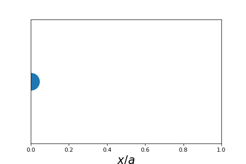

3.4.4. Particle in a Box#
3.4.4.1. Motivation#
To demonstrate how to use the Schrodinger equation we will look at one of the simplest quantum problems: particle in a box. This problem simply asks what are the solutions to the Shrodinger equation for a particle that is allowed to travel in one dimension in a finite domain.
3.4.4.2. Learning Goals#
After working through these notes, you will be able to:
Setup and solve the Schrodinger equation for a 1D particle in a finite box
Normalize 1D particle in a box wave functions.
Compute average values of observables from 1D particle in a box wave functions.
3.4.4.3. Coding Concepts#
The following coding concepts are used in this notebook:
3.4.4.4. Particle in a Box: Setting up the Problem#
To see the utility of the Schrodinger equation we will see what it predicts for the energy of a particle that can travel in one dimension but is restricted to a finite domain. This can be seen as asking what the allowed energy is for a particle in a one dimensional box. The only energy that this particle has is kinetic energy.

The first step in solving this problem, as is the case for all problem involving the Schrodinger equation, is to write out the Hamiltonian. From there, we can hopefully solve for the wave functions and the energies. To do so we can start by writing out the classical energy and then converting the terms to quantum operators.
where we have used that \(V(x) = 0\) as is stated in the problem. So the total energy is just equivalent to the total kinetic energy. Since this is for a single particle the classical kinetic energy is just \(\frac{1}{2}mv^2\).
In order to write out the Hamiltonian we can always start with
where \(\hat{K}\) is the kinetic energy operator. If we consult the table provided in the Schrodinger Equation notes we see that
Since this problem only involves a single dimension, we can write
Thus, the Schrodinger equation for this problem is
and the goal is to determine \(\psi(x)\) and \(E\).
3.4.4.5. Particle in a Box: Solution#
We start by rewriting the Schrodinger equation for the particle in a box in the more standard differential equation form:
Additionally, we have the boundary conditions that
The idea here is that the particle can not sit inside/on the wall. You can think of the wall as being an infinite potential at \(x=0\) and \(x=l\).
This form of differential equation and boundary conditions are exactly the problem we solved in the Classical Wave Equation notes. The general solution is
where \(k^2 = \frac{2mE}{\hbar^2}\) in this case.
Applying the boundary conditions to this general solution yields
Using two expressions for \(k\) yields our solutions for \(E\):
3.4.4.6. Particle in a Box: Applications#
Although this seems like a trivial problem, the model of a free particle in a finite box has been applied to actual physical systems with reasonable success. One example is the \(\pi\) electrons in a conjugated molecule. The free electron model for butadiene does a reasonable job at reproducing the the \(\pi\rightarrow\pi^*\) absorption band.
3.4.4.7. Probabilistic Intepretation of the Wave Function#
The wave function of a particle, such as the free particle, can be interpreted as the amplitude of the wave at that position. This is analagous to the classical wave equation.
The probability of finding a particle at position \(x\) is proportional to the square of the wave function. Specifically,
where \(\psi^*(x)\) is the complex conjugate of \(\psi(x)\). Note that wave functions can be complex but, if they are not, then \(\psi^*(x) = \psi(x)\) and \(P \propto \psi(x)^2\).
This intepretation of the wave function has some interesting and useful outcomes. Here we will only consider three of them:
The wave function must be normalized
Probability of observing a particle in a particular domain is \(\text{Prob}(x_1 \leq x \leq x_2) = \int_{x_1}^{x_2} \psi^*(x)\psi(x)dx\)
Average properties of a particle can be computed as \(<A> = \int \psi^*(x)\hat{A}\psi(x)dx\)
3.4.4.7.1. Wave functions must be normalized#
Because the square of the wave function is related to the probability we can normalize the wave function based on
Let’s consider what this means for the particle in a box wave functions.
We can determine the value for \(B_n\) based on the normalization condition.
where we have use the domain \(0\leq x \leq a\) rather than \(-\infty< x < \infty\) because that is the finite domain of this particular problem. Now let’s solve the \(\sin^2\) integral
Thus, we have that
Finally, our normalized particle in a box wave functions are
Show code cell source
import numpy as np
import matplotlib.pyplot as plt
%matplotlib inline
def psi(x,n):
a=1
return np.sqrt(2/a)*np.sin(n*np.pi*x/a)
# make an array containing domain of wavelengths to consider
x = np.arange(0,1,0.001)
# setup plot parameters
fig = plt.figure(figsize=(8,4), dpi= 80, facecolor='w', edgecolor='k')
ax = plt.subplot(111)
ax.grid(b=True, which='major', axis='both', color='#808080', linestyle='--')
ax.set_xlabel(r'$x/a$',size=20)
ax.set_ylabel(r'$\psi(x)$',size=20)
plt.tick_params(axis='both',labelsize=20)
# plot quantum result
ax.plot(x,psi(x,1),label="n=1",lw=2)
ax.plot(x,psi(x,2),label="n=2",lw=2)
ax.plot(x,psi(x,3),label="n=3",lw=2)
ax.plot(x,psi(x,4),label="n=4",lw=2)
plt.title("Wavefunctions of Particle in a Box",fontsize=20)
# make legend
ax.legend(fontsize=12,markerscale=5.0);
3.4.4.7.2. Probabiliity of Observing Particle in Finite Domain#
Since the square of the wave function is a probability function, we can determine the probability of observing a particle in a particular domain using the relationship
For example, compute the probability of observing the particle in a box being in the domain \(\frac{a}{3} \leq x \leq \frac{2a}{3}\). We simply use the above equation and the normalized particle in a box wave function:
We will use the definite integral of \(\sin^2ax\) from a table:
Perform \(u = \) substition of the integral above to get into the table form
Show code cell source
# plot probabilities
import numpy as np
import matplotlib.pyplot as plt
%matplotlib inline
def psi(x,n):
a=1
return np.sqrt(2/a)*np.sin(n*np.pi*x/a)
# make an array containing domain of wavelengths to consider
x = np.arange(0,1,0.001)
# setup plot parameters
fig = plt.figure(figsize=(8,4), dpi= 80, facecolor='w', edgecolor='k')
ax = plt.subplot(111)
ax.grid(b=True, which='major', axis='both', color='#808080', linestyle='--')
ax.set_xlabel(r'$x/a$',size=20)
ax.set_ylabel(r'$P(x)$',size=20)
plt.tick_params(axis='both',labelsize=20)
# plot quantum result
ax.plot(x,psi(x,1)**2,label="n=1",lw=2)
ax.plot(x,psi(x,2)**2,label="n=2",lw=2)
ax.plot(x,psi(x,3)**2,label="n=3",lw=2)
plt.title("Probabilites of Particle in a Box",fontsize=20)
# make legend
ax.legend(fontsize=12,markerscale=5.0);

3.4.4.7.3. Computing Average Properties from a Wave Function#
Because of the probabilistic interpretation of the wave funtion, average properties can be computed from the wave function. The general formula is
where \(\hat{A}\) is any operator. This could be momentum, kinetic energy, etc.
Let’s look at a few examples.
Compute the average value of \(x^2\) for a particle in a box
Compute the average energy for a particle in a box
Compute the average momentum for a particle in a box
3.4.4.7.4. Example: The average of \(x^2\) for a particle in a box#
To compute the average value of \(x^2\) we start by writing the integral expression
For the particle in a box, we can limit the domain, and thus the bounds of integration, to \(0\leq x \leq a\). We can also set \(\psi_n(x) = \sqrt{\frac{2}{a}}\sin\frac{n\pi x}{a}\).
Thus, for a particle in a 1D box of size \(a\) we get
From an integral table we find that
We use this equation with \(\alpha = \frac{n\pi}{a}\) and get
This result, combined with the result for \(\langle x \rangle\), can be used to determine \(\sigma_x\), the standard deviation of particle deviation:
Show code cell source
# plot probabilities
import numpy as np
import matplotlib.pyplot as plt
%matplotlib inline
def sigmax(n):
return 1/(2*np.pi*n)*np.sqrt((np.pi*n)**2/3-2)
# make an array containing domain of wavelengths to consider
n = np.arange(1,11)
# setup plot parameters
fig = plt.figure(figsize=(8,4), dpi= 80, facecolor='w', edgecolor='k')
ax = plt.subplot(111)
ax.grid(b=True, which='major', axis='both', color='#808080', linestyle='--')
ax.set_xlabel(r'$n$',size=20)
ax.set_ylabel(r'$\sigma_x/a$',size=20)
plt.tick_params(axis='both',labelsize=20)
# plot quantum result
ax.plot(n,sigmax(n),'o',markersize=10)
plt.title("Standard Deviation of Particle Position",fontsize=20)
# make legend
#ax.legend(fontsize=12,markerscale=5.0);
Text(0.5, 1.0, 'Standard Deviation of Particle Position')

3.4.4.7.5. Example: Average Energy of Particle in a Box#
The average energy of the particle in a box is a special case of computing an average quantity. We will start by writing out the standard definition of computing and average from a wavefunction
where \(\hat{E}\) is the total energy operator. We know the total energy operator by another symbol, namely \(\hat{E} = \hat{H}\). We plug this into the above equation to get
We now recognize that, for the particle in a box wavefunctions that we are discussion these were derived from the Schrodinger equation
where \(E_n\) is a scalar. Thus, for the average energy we get
The last equality holding because the wave functions are normalized.
3.4.4.7.6. Example: Average momentum#
To compute the average momentum of a particle in a 1D box we start in the usual way
Recall that the momentum operator in one dimension is given by
We now substitute this into the above equation and solve
where the last equality can be found in an integral table.
So the average momentum of a particle in a box is zero. This is because it is equally probable for the particle to be moving forward and backwards.